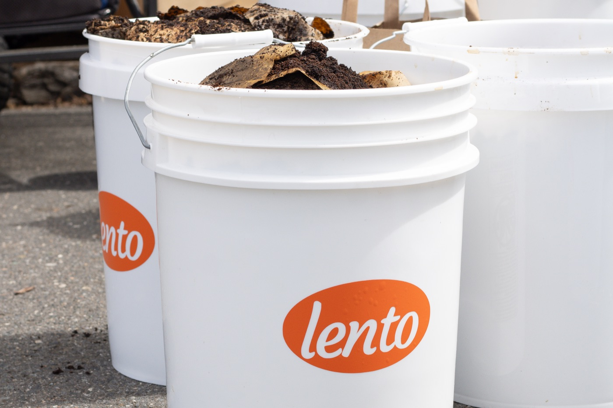
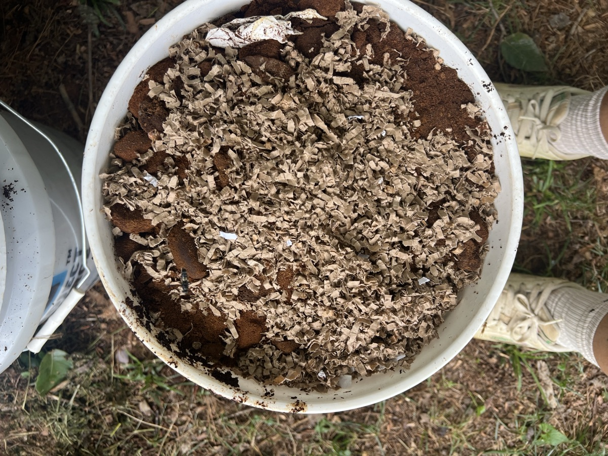
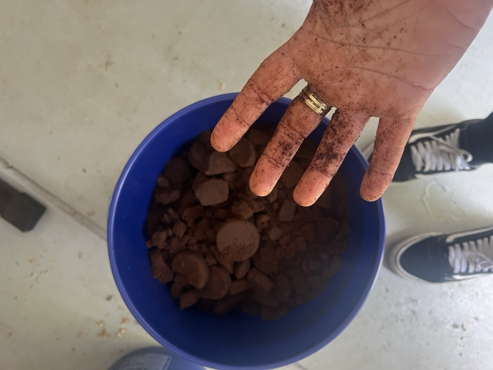

Charlotte coffee grounds, turned into soil.
Next up · Sat, Nov 14 · 2 to 4 PM El Patio de Atrás →
la ventanita pops up around Charlotte serving Cuban and Panamanian cafecitos: cortaditos, coladas, café con leche.
Every weekend we collect used grounds from local cafés and let them break down for 10 to 12 weeks until they're soil.
It all builds toward a recreation center for Charlotte's Spanish-speaking community. Slowly, on purpose.

